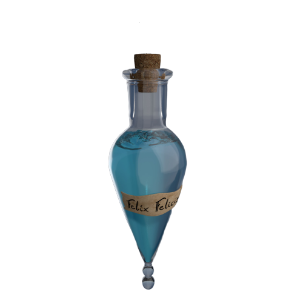
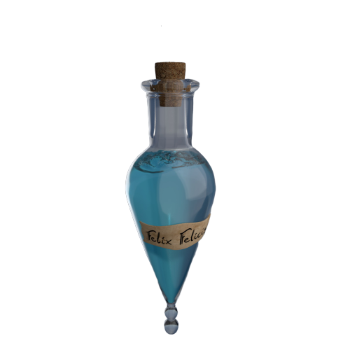

Na casa dos seus tios, Harry Potter recebe a visita do elfo doméstico Dobby, que lhe traz um recado. Ele pede que Potter não retorne à escola de magia e bruxaria de Hogwarts, pois coisas terríveis irão acontecer. Ignorando o aviso, o pequeno bruxo parte para Hogwarts, mas já na saída encontra dificuldades, pois a passagem entre os dois mundos fora fechada misteriosamente.
Na escola, fatos estranhos começam após a chegada de Potter e culminam quando a escola inteira é envolvida e seus alunos aparecem petrificados. Além de todos os problemas, Harry tem que lidar com o novo e arrogante professor de defesa contra a arte das trevas.
| Livro | Filme | ||
|---|---|---|---|
| Título Original | Harry Potter and the Chamber of Secrets | Título Original | Harry Potter and the Chamber of Secrets |
| Publicação | 1998 | Lançamento | 2002 |
| Editora | Bloombury Publishing | Ditribuição | Warner Bros. Pictures |
| Autora | Joanne Rowling | Diretor | Chris Columbus |
| Ilustrador | Mary GrandPré | Roteiristas | Joanne Rowling Steve Kloves |
| Linha Temporal | 13 de junho de 1943 31 de julho de 1992 – 29 de maio de 1993 |
Produtor | Chris Columbus |
| Nº de Págnas | 288 | Duração | 161 minutos |
| Gênero | Fantasia e Ficção | Gênero | Aventura, Fantasia, Família |
| País | Reino Unido | País de Origem | Estados Unidos da América Reino Unido da Grã-Betanha Irlanda do Norte |


 
